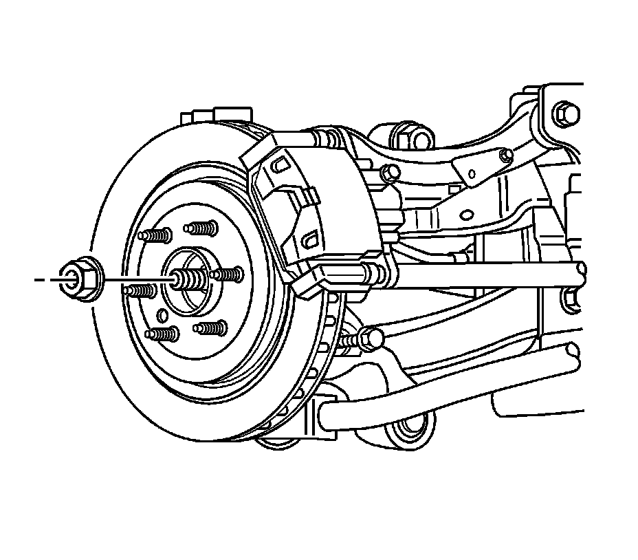
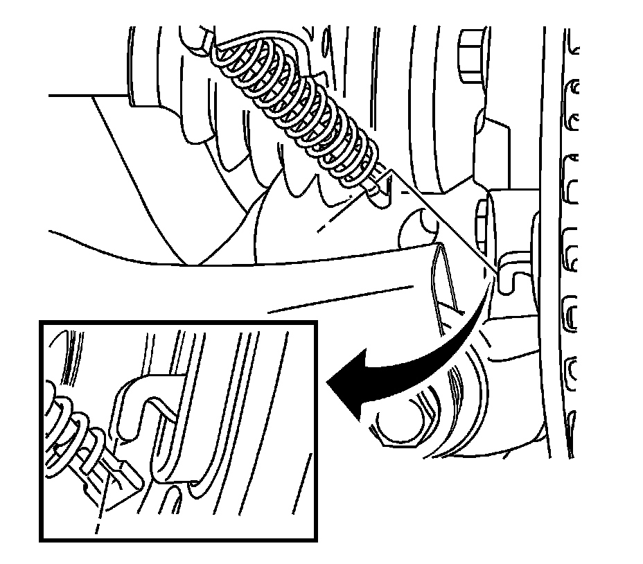
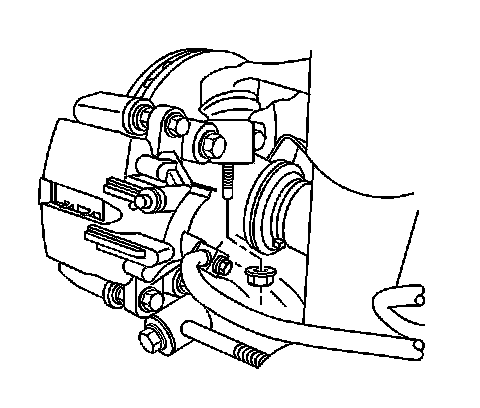
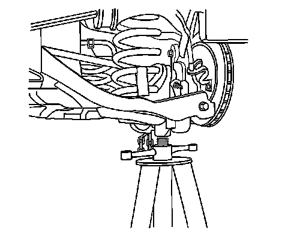
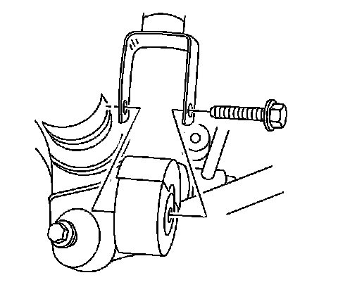
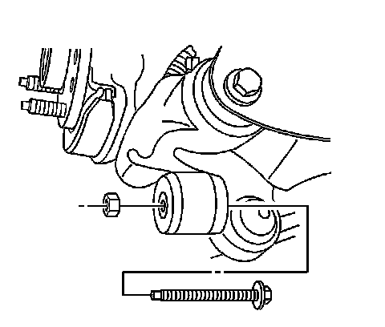
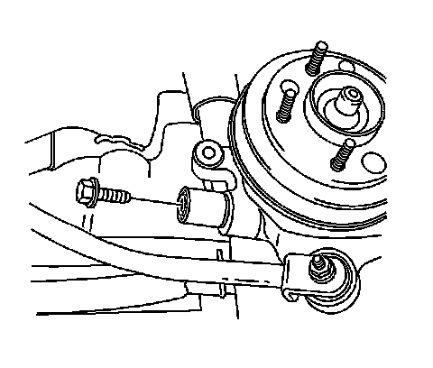
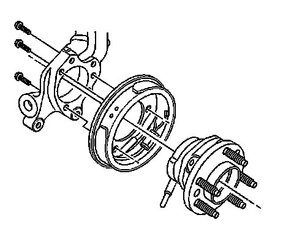

Rear Suspension
Knuckle Replacement
Tools Required
* J 45859 Axle Remover
* J 43631 Ball Joint Remover
Removal Procedure
1. Raise and support the vehicle. Refer to Lifting and Jacking the Vehicle (Service and Repair) .
2. Remove the tire and wheel. Refer to Tire and Wheel Removal and Installation (Service and Repair) .
3. Remove the rear brake rotor. Refer to Rear Brake Rotor Replacement (Service and Repair) .

4. Remove the wheel driveshaft nut and discard.

5. Disconnect the Antilock Brake System (ABS) sensor harness connector.
6. Disconnect the ABS sensor harness connector from the backing plate.

7. Remove the parking brake cable bracket from the knuckle. Refer to Park Brake Cable Mounting Bracket Replacement (Park Brake Cable Mounting Bracket Replacement) .
8. Remove the parking brake cable from the parking brake lever.

9. Remove the upper ball joint mounting nut.

10. Using J 43631 separate the ball stud from the knuckle.

11. Support the lower control arm with a suitable jack.

12. Remove the lower shock mounting bolt.

13. Remove the trailing arm to knuckle mounting bolt and nut.

14. Remove the lower control arm to knuckle mounting bolt.

15. Remove the adjustment link to knuckle mounting bolt.

16. Install J 45859 , CJ129 Universal Hub Puller - Snap-on, 7394 Universal Hub Puller - OTC, or equivalent to the wheel bearing/hub.
Important: May need to use the wheel hub remover to fully disengage the wheel bearing/hub from the drive axle.
17. Using the J 45859 , CJ129 Universal Hub Puller - Snap-on, 7394 Universal Hub Puller - OTC, or equivalent, disengage the wheel drive shaft from the wheel bearing/hub.

18. Remove the knuckle from the vehicle.
19. Remove the wheel bearing/hub bolts.
20. Remove the knuckle and backing plate from the wheel bearing/hub.
Installation Procedure
1. Install the knuckle and backing plate to the wheel bearing/hub.
Notice: Refer to Fastener Notice (Fastener Notice) .
2. Install the wheel bearing/hub mounting bolts.
Tighten the bolts to 125 N.m (92 lb ft).
3. Install the knuckle to the vehicle.
Important: Loosely install all fasteners before tightening.
4. Install the adjustment link to knuckle mounting bolt.
Tighten the adjustment link to knuckle bolt to 160 N.m (118 lb ft).
5. Install the trailing arm to knuckle mounting bolt and nut.
Tighten the trailing arm to knuckle bolt to 170 N.m (125 lb ft).
6. Install the lower shock and mounting bolt.
Tighten the lower shock mounting bolt to 150 N.m (111 lb ft).
7. Install the lower control arm to knuckle mounting bolt.
8. Connect the upper ball joint to the knuckle.
9. Install the upper ball joint mounting nut.
10. Install the parking brake cable bracket to the knuckle. Refer to Park Brake Cable Mounting Bracket Replacement (Park Brake Cable Mounting Bracket Replacement) .
11. Remove the jack.
12. Connect the ABS sensor electrical connector to the backing plate.
13. Connect the ABS sensor electrical connector.
14. Install a new wheel drive shaft nut.
Tighten the nut to 160 N.m (118 lb ft).
15. Install the brake rotor. Refer to Rear Brake Rotor Replacement (Service and Repair) .
16. Install the tire and wheel. Refer to Tire and Wheel Removal and Installation (Service and Repair) .
17. Lower the vehicle.